04.06.2024-22h26

Gabriel M Lima
"Como o LaraHub Ajuda a Conscientizar sobre a Preservação dos Oceanos"
O LaraHub é uma iniciativa inovadora dedicada à conscientização e preservação dos oceanos. Com um conglomerado de serviços abrangentes, o LaraHub oferece uma abordagem multifacetada para educar, engajar e capacitar as pessoas na luta pela conservação dos ecossistemas marinhos.
LaraInfo: Informação de Qualidade
A plataforma LaraInfo é o centro de informações do LaraHub. Aqui, os usuários podem acessar notícias atualizadas, artigos científicos, e relatórios sobre os oceanos. LaraInfo se dedica a fornecer dados precisos e análises detalhadas, ajudando a aumentar o conhecimento e a compreensão sobre os desafios que os oceanos enfrentam e as soluções possíveis.
LaraPace: Portal de Doações
LaraPace é a vertente do LaraHub dedicada a ações concretas de conservação. Através de LaraPace, os usuários podem fazer doações para projetos ambientais específicos, apoiar causas relacionadas à proteção marinha, e acompanhar o impacto de suas contribuições. Este portal permite que as pessoas se envolvam diretamente na preservação dos oceanos, financiando iniciativas essenciais.
LaraTour: Ecoturismo Educativo
LaraTour oferece experiências de ecoturismo projetadas para educar e inspirar. As viagens organizadas por LaraTour são oportunidades para os participantes conhecerem de perto os ecossistemas marinhos, aprenderem sobre a biodiversidade e entenderem as ameaças que esses ambientes enfrentam. Essas experiências não só promovem a conscientização, mas também incentivam práticas turísticas sustentáveis.
LaraCult: Cultura e Educação
LaraCult é a seção cultural do LaraHub, oferecendo uma rica variedade de conteúdos educativos, incluindo livros, contos, e ebooks sobre os oceanos. LaraCult promove a conscientização através da cultura, proporcionando recursos que educam e sensibilizam as pessoas sobre a importância dos oceanos e a necessidade de sua preservação.
LaraAI: Assistente Virtual Inteligente
LaraAI é o assistente virtual do LaraHub, projetado para facilitar o acesso às informações e serviços oferecidos pela plataforma. Com LaraAI, os usuários podem pedir resumos de notícias, obter informações sobre causas de doações e viagens de ecoturismo, e tirar dúvidas sobre os serviços do LaraHub. LaraAI torna a navegação pelo conglomerado de serviços mais eficiente e acessível.
Conclusão
O LaraHub é uma plataforma abrangente que combina informação, ação, experiência e educação para promover a preservação dos oceanos. Através de seus serviços interconectados — LaraInfo, LaraPace, LaraTour, LaraCult e LaraAI — o LaraHub não só educa e conscientiza, mas também mobiliza as pessoas a agirem em prol de um futuro sustentável para os oceanos.